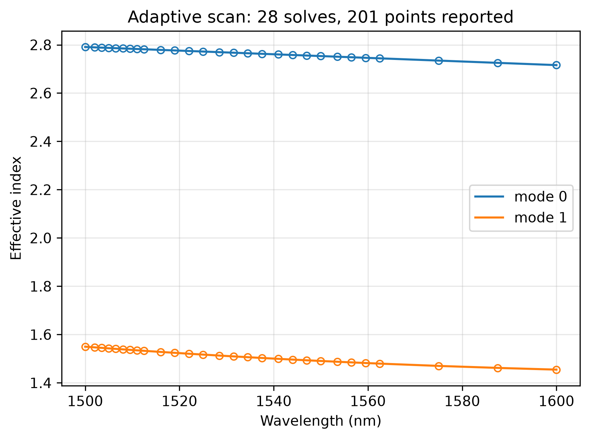
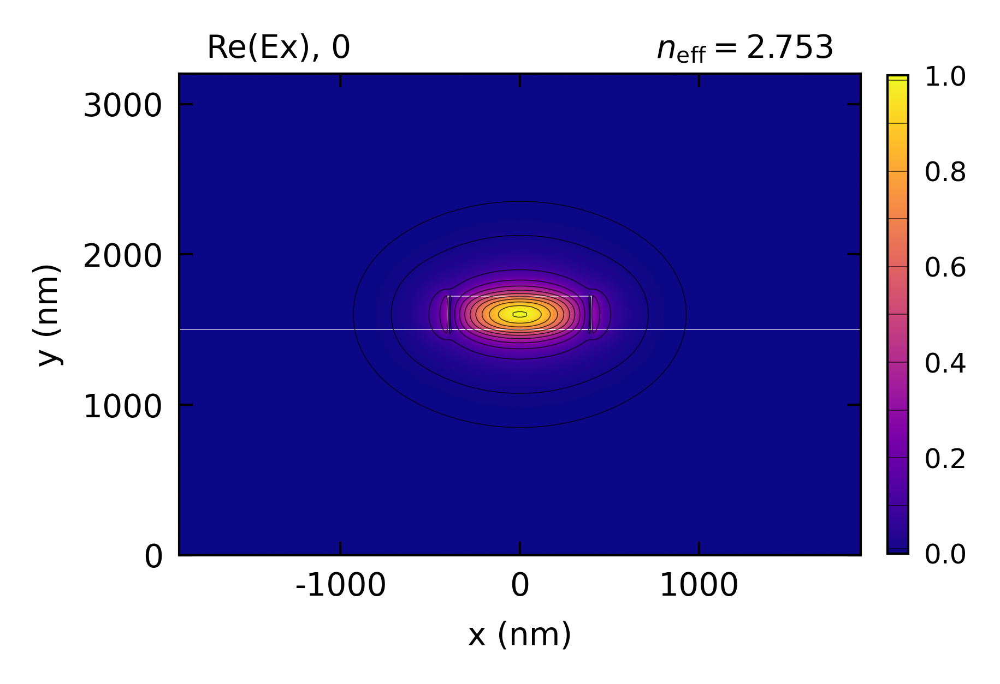

Adaptive Scan
Highlighted features: sweep(adaptive=True) for a fine wavelength spectrum from a sparse set of solves, and the tolerance that sets how many.
This code example is licensed under the BSD 3-Clause License.
import sys
import emodeconnection as emc
import numpy as np
from matplotlib import pyplot as plt
## Adaptive wavelength scanning: report a fine spectrum from a few solves.
## The scan places solves only where the mode list is still moving and
## interpolates the rest, so the cost follows how fast the modes change rather
## than how many points are asked for.
## Set simulation parameters
dx, dy = 20, 20 # [nm] resolution
w_core, h_core = 800, 220 # [nm] Si core
clearance = 1500 # [nm] cladding on each side
num_modes = 2 # [-] both guided across the band below
wav_lo, wav_hi = 1500, 1600 # [nm]
wavelengths = np.linspace(wav_lo, wav_hi, 201) # [nm] where results are wanted
## Connect and initialize EMode
em = emc.EMode(emode_cmd=sys.argv[1:], simulation_name='adaptive_scan')
em.settings(
wavelength=(wav_lo + wav_hi) / 2, x_resolution=dx, y_resolution=dy,
window_width=w_core + 2 * clearance, window_height=h_core + 2 * clearance,
num_modes=num_modes, boundary_condition='SS', background_material='SiO2')
em.shape(name='clad', material='SiO2', height=clearance)
em.shape(name='core', material='Si', width=w_core, height=h_core)
## How many solves the scan costs is set by `tolerance`, the largest mode-list
## change tolerated between neighbouring solves -- not by the number of points.
for tolerance in (1e-2, 1e-3, 5e-4):
scan = em.sweep(key='wavelength', values=wavelengths, adaptive=True,
tolerance=tolerance, result=['effective_index'])
n_solves = len(scan['solved_wavelengths'])
print(f'tolerance {tolerance:.0e}: {n_solves:3d} solves for {len(wavelengths)} points'
f' ({len(wavelengths) / n_solves:.0f}x fewer)')
if scan['unconverged']:
print(f' unresolved intervals: {len(scan["unconverged"])}')
## The last scan above is the one kept. Mark where it actually solved.
solved = np.sort(np.asarray(scan['solved_wavelengths']))
n_eff = np.real(np.asarray(scan['effective_index']))
em.settings(wavelength=1550)
em.FDM()
em.plot(component='Ex', mode=0)
em.close()
plt.figure(figsize=(6, 4.5))
for m in range(num_modes):
line, = plt.plot(scan['values'], n_eff[m], label=f'mode {m}')
## Bisection places the solves, so they are not generally grid points;
## mark them on the interpolant at the nearest reported wavelength.
picked = np.clip(np.searchsorted(scan['values'], solved), 0, len(scan['values']) - 1)
plt.plot(scan['values'][picked], n_eff[m][picked], 'o', ms=5,
color=line.get_color(), markerfacecolor='none')
plt.xlabel('Wavelength (nm)')
plt.ylabel('Effective index')
plt.title(f'Adaptive scan: {len(solved)} solves, {len(scan["values"])} points reported')
plt.legend()
plt.grid(True, alpha=0.3)
plt.tight_layout()
plt.savefig('adaptive_scan.png', dpi=300, bbox_inches='tight')
## Interpolation between solves is linear, so a scan is for reading values off,
## not for differentiating twice: a dispersion curve wants solves at every point.
Console output:
EMode3D 1.0.4 - email
Adaptive wavelength scan over 1500-1600 nm... completed in 5.5 sec
Adaptive wavelength scan over 1500-1600 nm... completed in 12.3 sec
Adaptive wavelength scan over 1500-1600 nm... completed in 29.6 sec
Meshing completed in 0.4 sec
Solving modes completed in 0.7 sec
Exited EMode
tolerance 1e-02: 5 solves for 201 points (40x fewer)
tolerance 1e-03: 12 solves for 201 points (17x fewer)
tolerance 5e-04: 28 solves for 201 points (7x fewer)
Figures:

